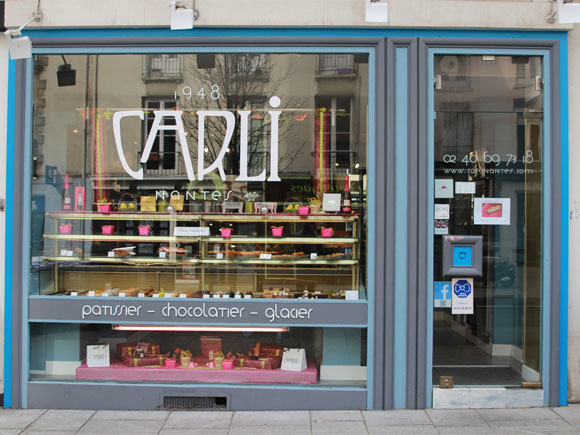
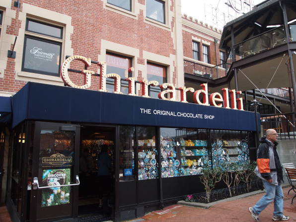
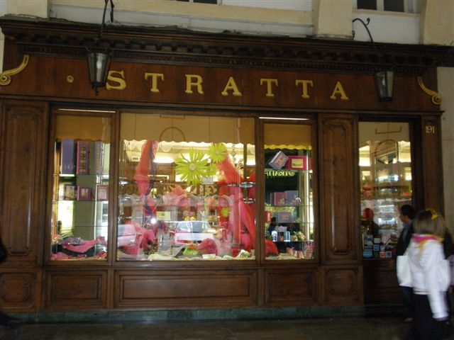

Variety
France America Italy Spain Switzerland CanadaHistory

始まり
チョコレートはメソアメリカで生まれました。
メソアメリカは、現在のメキシコ南部、中央アメリカなどの地域で、農耕文化やマヤ、アステカなど独自の高度な文明が繁栄しました。
カカオの最も古い痕跡は、メキシコ湾岸沿いの肥沃な低地に中米最古の文明を築いたオルメカ族です。
オルメカ文明にはカカオという言葉があり、オルメカ人はカカオを最初に利用したといわれます。

伝来
16世紀～19世紀にスペインから欧州各地へ伝播する過程については諸説があります。
互いに国境を接しており、多くの人の行き来があり、また聖職者や修道院組織の交流があり、各国・各地域へ伝播したものと思われます。
日本に伝わったのは寛政9(1797)年3月晦日、出島の阿蘭陀人から貰い請けて届け出た品物の中に、“しょくらあと 六つ”の記載がありました。
飲み物から食べ物へ
チョコレートは長い間飲み物として愛されてきましたが、ココアバターが入っていて大変濃厚なものでした。
18世紀中ごろまでは飲みにくさを緩和するため、デンプンなどの粉を混ぜて余分な脂肪分を中和するのが普通でした。
しかし、1800年代になると、チョコレートの4大発明といわれるものをはじめとした多くの技術革新が行われ、また、食べるチョコレートが考案されました。
Efficacy

太りにくい
最近チョコレートダイエットというダイエット方法が注目を集めています。
チョコレートは高カロリーですが、それはカカオバターによるもので、カカオバター自体の脂肪は溜まりにくいんです。
しかも、チョコレートには脂肪分解のはたらきもあります。
ダイエット中でも甘いものが定期的に食べられることから、間食を食べなくても満足できたり、我慢による反動の食べ過ぎがないという効果が出ています。

免疫力の向上
チョコレートはカルシウム、マグネシウム、鉄、亜鉛などのミネラル類を豊富に含む栄養バランスのとれた食品です。
マグネシウム不足は心臓病の危機を増加することが知られています。
ダークチョコレートやローチョコレートには、食物繊維も含まれており、アーモンドなどと一緒に取るとミネラルも得られます。

美肌効果
カカオプロテインは腸内環境を整え便秘を解消します。便秘が解消されれば腸内に有害物質が発生しなくなり、肌の不調も改善されます。
また、肌のターンオーバーも正常になるため、
シミにも効果的だと言われています。
カカオポリフェノールには抗酸化作用があるため、シミやシワなどの老化の原因となる過剰な活性酸素を除去する働きがあります。